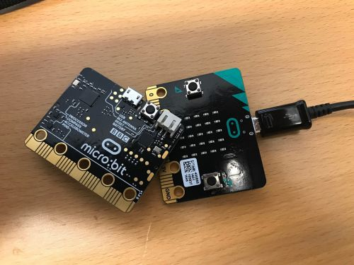

As the rise of the digital age continues, more and more people want their children want their children to grow up with all of the proper skills needed to navigate the digital world properly from an early age and one of the ways they have started to help with this is the Micro:bit.
The Micro:bit is a device created by BBC in order to aid children in learning to code and use hardware to customize it. Using the micro:bit the children are able to create anything that they would like to create. Because of this teachers who are not adept at coding are struggling, this website will include tutorials for teachers in order for them to be able to learn and teach their students.